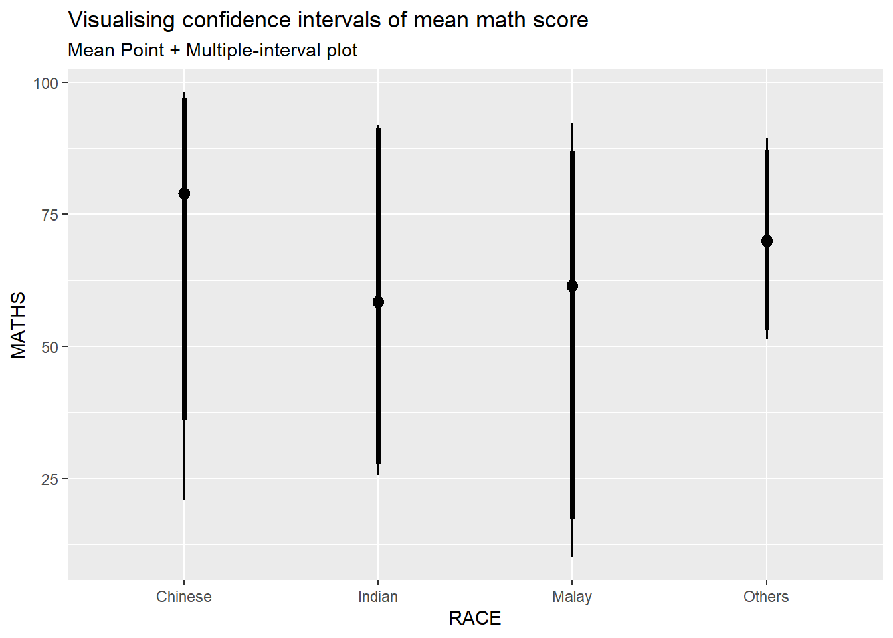
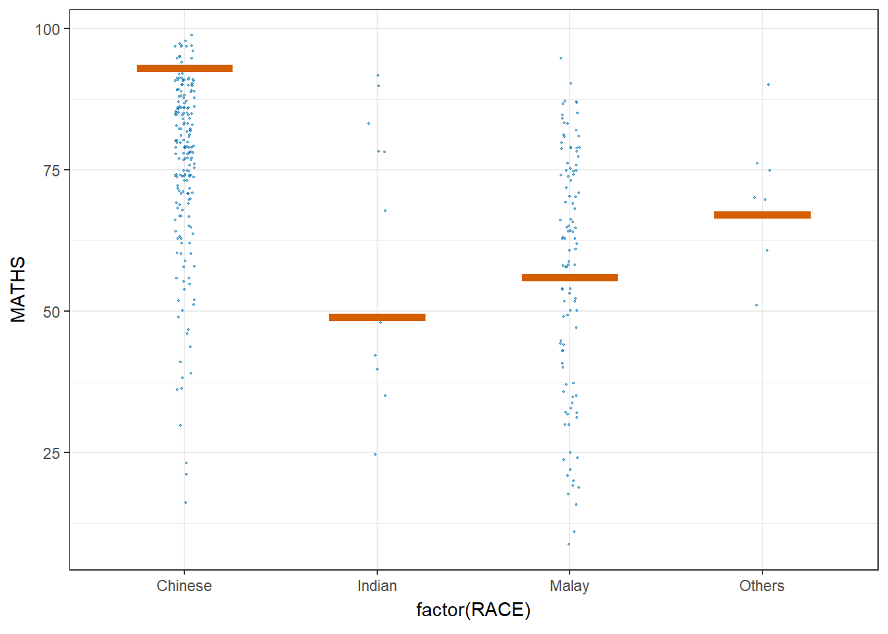

pacman::p_load(plotly, crosstalk, DT,
ggdist, ggridges, colorspace,
gganimate, tidyverse)Hands-on_Ex04c
Getting Started
Objective of this exercise:
Learn about uncertainty
How to visualize uncertainty with different package (ggplot2, plotly, DT and ggdist) and different visualization techniques (i.e. error bar)
Create hypothetical outcome plots (HOPs) by using ungeviz package
Import Libraries
In this exercise, we’ll be using the following libraries:
plotly
crosstalk
DT
ggdist: used to visualize distribution adn uncertainty
ggridges
colorspace
gganimate
tidyverse
Import Data
exam <- read_csv("Exam_data.csv")Uncertainty
Main point:
Main concept: how much of the visualization we create is reliable since the dataset used may not fully represent the full population.
However, we can mitigate this by using statistical methods (i.e. confidence interval, credible interval and standard error)
Visualizing Uncertainty of Point Estimates with ggplot2
Point of estimate is a single best guess for population parameter calculated from sample data (e.g. sample mean, sample SD, etc). Though point of estimate don’t tell us how accurate the value, but it tells us how the value might vary from the true value because of sampling variability. These approach are used to express uncertainty:
Standard error: standard deviation of sampling distribution
Confidence interval: range likely to contain true value
Credible interval: probability-based range for parameter
my_sum <- exam %>%
group_by(RACE) %>%
summarise(
n=n(),
mean=mean(MATHS),
sd=sd(MATHS)
) %>%
mutate(se=sd/sqrt(n-1))
knitr::kable(head(my_sum), format = 'html')| RACE | n | mean | sd | se |
|---|---|---|---|---|
| Chinese | 193 | 76.50777 | 15.69040 | 1.132357 |
| Indian | 12 | 60.66667 | 23.35237 | 7.041005 |
| Malay | 108 | 57.44444 | 21.13478 | 2.043177 |
| Others | 9 | 69.66667 | 10.72381 | 3.791438 |
Tip
What’s happening in the code:
group_by()is used in line 2 to group data by RACEsummarize()is used to generate the count, mean and SD of the Maths scoresmutate()is used to derive standard error of Maths score by RACEthe knitr package display the tibble data frame into table
Plotting Standard Error Bars of Point Estimates
We can plot error bar by using geom_errorbar() which will compute the formula of mean - standard error for bottom of error bar (ymin argument) and mean + standard error for the top error bar (ymax argument).

ggplot(my_sum) +
geom_errorbar(
aes(x=RACE,
ymin=mean-se,
ymax=mean+se),
width=0.2,
colour="black",
alpha=0.9,
linewidth=0.5) +
geom_point(aes
(x=RACE,
y=mean),
stat="identity",
color="red",
size = 1.5,
alpha=1) +
ggtitle("Standard error of mean maths score by race")Plotting Confidence Interval of Point Estimates
We can plot the confidence interval instead of standard error like below.

ggplot(my_sum) +
geom_errorbar(
aes(x=reorder(RACE, -mean),
ymin=mean-1.96*se,
ymax=mean+1.96*se),
width=0.2,
colour="black",
alpha=0.9,
linewidth=0.5) +
geom_point(aes
(x=RACE,
y=mean),
stat="identity",
color="red",
size = 1.5,
alpha=1) +
labs(x = "Maths score",
title = "95% confidence interval of mean maths score by race")
Tip
What’s the difference between this code and the one before:
the
ymaxandyminarguments are different depending on the measure used. The code above factors in 1.96 (captures 95% of the area under the curve)The code
reorder(RACE, -mean)reorders the error bar by the average Maths score
Making Point Estimates Visualization Interactive
In this example, we’ll be plotting interactive error bar with 99% confidence interval of mean Maths score by race.
shared_df = SharedData$new(my_sum)
bscols(widths = c(4,8),
ggplotly((ggplot(shared_df) +
geom_errorbar(aes(
x=reorder(RACE, -mean),
ymin=mean-2.58*se,
ymax=mean+2.58*se),
width=0.2,
colour="black",
alpha=0.9,
size=0.5) +
geom_point(aes(
x=RACE,
y=mean,
text = paste("Race:", `RACE`,
"<br>N:", `n`,
"<br>Avg. Scores:", round(mean, digits = 2),
"<br>95% CI:[",
round((mean-2.58*se), digits = 2), ",",
round((mean+2.58*se), digits = 2),"]")),
stat="identity",
color="red",
size = 1.5,
alpha=1) +
xlab("Race") +
ylab("Average Scores") +
theme_minimal() +
theme(axis.text.x = element_text(
angle = 45, vjust = 0.5, hjust=1)) +
ggtitle("99% Confidence interval of average /<br>maths scores by race")),
tooltip = "text"),
DT::datatable(shared_df,
rownames = FALSE,
class="compact",
width="100%",
options = list(pageLength = 10,
scrollX=T),
colnames = c("No. of pupils",
"Avg Scores",
"Std Dev",
"Std Error")) %>%
formatRound(columns=c('mean', 'sd', 'se'),
digits=2))
Break down of the code
bscols()lays out the interactive graph created byplotly()with the table created byDT::datatableside by side.plotly()is used to convert the ggplot2 graph we make to interactive Plotly object.DT::datatabledisplays shared_df data into interactive table
Exploring ggdist Package
ggdist package is deisgned to visualize distribution and uncertainty from ggplot2 geoms and stats
It’s designed for frequentist and Bayesian uncertainty visualization, which are the frameworks used to answer how uncertain are we of the data. Both view that uncertainty visualization can be unified through perspective fo distribution visualization.
Frequentist uncertainty: assume that probabilities are objective and fixed. Confidence distribution or bootstrap distribution are used to visualize the model
Bayesian uncertainty: assume that probability change based on new information. Probability distribution is used to visualize bayesian uncertainty
Visualize Uncertainty of Point Estimate using ggdist
In this example, we use <a href="https://mjskay.github.io/ggdist/">stats_pointinterval() to display distribution of Maths score by race.

exam %>% ggplot(aes(x = RACE, y = MATHS)) +
stat_pointinterval() +
labs( title = "Visualising confidence intervals of mean math score", subtitle = "Mean Point + Multiple-interval plot")We can visualize with different confidence interval, central tendency and interval type like below.

exam %>%
ggplot(aes(x = RACE,
y = MATHS)) +
stat_pointinterval(
show.legend = FALSE) +
labs(
title = "Visualising confidence intervals of mean math score",
subtitle = "Mean Point + Multiple-interval plot").width = 0.95will plot a 95% interval (a range which 95% of the distribution lies).point = medianas central tendency.interval = qisets the type of interval to quantile interval
Alternatively, we can also plot multiple interval like below (95% and 99% interval)

exam %>%
ggplot(aes(x = RACE, y = MATHS)) +
stat_pointinterval(
.width = c(0.95, 0.99),
show.legend = FALSE
) +
labs(
title = "Visualising confidence intervals of mean math score",
subtitle = "Mean Point + Multiple-interval plot"
)Customizing Style of ggdist visualization
We can change the style fo visualization by using stat_gradientinterval() like below

exam %>%
ggplot(aes(x = RACE,
y = MATHS)) +
stat_gradientinterval(
fill = "skyblue",
show.legend = TRUE
) +
labs(
title = "Visualising confidence intervals of mean math score",
subtitle = "Gradient + interval plot")Visualizing Uncertainty using Hypothetical Outcome Plots (HOPs) using ungeviz package
Install and launch package
devtools::install_github("wilkelab/ungeviz")library(ungeviz)
ggplot(data = exam,
(aes(x = factor(RACE),
y = MATHS))) +
geom_point(position = position_jitter(
height = 0.3,
width = 0.05),
size = 0.4,
color = "#0072B2",
alpha = 1/2) +
geom_hpline(data = sampler(25,
group = RACE),
height = 0.6,
color = "#D55E00") +
theme_bw() +
transition_states(.draw, 1, 3)